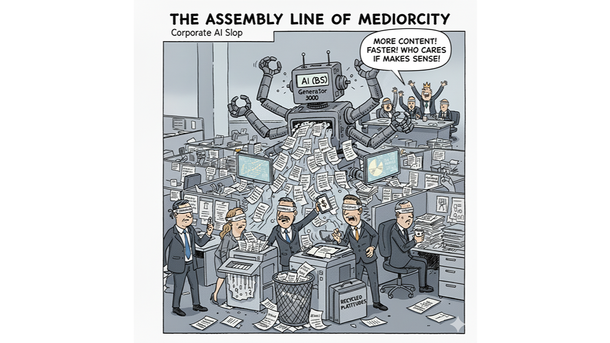

The term AI slop started in video — endless synthetic clips that are briefly impressive but quickly feel the same. That sameness now defines much of today's written and analytical work. Inside many organizations, AI tools quietly produce reports, strategies, and communications that look intelligent but lack original thought. They're competent, coherent, and deeply average. This isn't bad writing — it's lost intention: work no longer grounded in lived experience, proprietary data, or individual conviction.

Why "Average" Is Built In
Large language models are trained across the full range of human expression. By design, they produce an optimized midpoint — something statistically close to what we've all said before. That's why results feel safe and readable. But the same property that makes them fluent also makes them homogenizing. They tend toward consensus, smoothing away extremes of style and risk. It's the tyranny of the average: a system that raises the floor but lowers the ceiling.
The Real Risk
In most companies, the threat isn't that AI produces something wrong — it's that it produces something generic. Briefings, strategy decks, and press releases all polished to the same voice and cadence. Work that seems authoritative but has no fingerprint of the organization's experience or priorities.
You can see it in strategy decks that blur together — identical diagrams, templated phrasing, recycled narratives about transformation. They look modern but reveal nothing of the company itself.
The Leadership Gap
This isn't a technical failure. It's a leadership one. AI has entered workplaces faster than organizations have learned to govern or contextualize it. Teams experiment in isolation, producing outputs that are efficient but collectively generic. Leaders have yet to define what good AI-assisted work means: when to trust it, when to challenge it, and how to ensure it represents genuine thinking. Until that happens, AI slop risks remaining the cultural and corporate default.
Restoring Substance
Escaping the tyranny of the average isn't about banning AI. The goal isn't to slow innovation — it's to give it direction. It's about reintroducing friction — the reflection that keeps speed from displacing thought.
- Making reflection part of the process. Every AI-assisted draft should be questioned. Does it represent what we believe? Draw on our data or experience? Would we say this in person?
- Reclaiming authorship. AI is a collaborator, not an author. Its role is to surface possibilities, not decide what's true. The human job is to impose point of view — to decide what matters and why.
- Encouraging critique. Treat AI output as a first pass, not a finished product. Review it like a junior analyst's work: ask where it's vague, hedging, or hollow.
- Modeling discernment. Leaders set the tone by how they use AI. When they show that speed doesn't replace judgment, that message scales faster than any guideline.
Beyond Slop
AI slop isn't just a creative issue; it's a strategic one. It shows how easily organizations confuse volume with insight. The next phase of AI adoption won't be about who generates content faster, but who generates meaning — combining machine fluency with human clarity and conviction.
AI isn't making us dumber — our uncritical use of it is. The cure for AI slop isn't better prompting. It's better leadership — anchored in discipline, reflection, and judgment.